In welk deel van het mediastinum zijn de volgende structuren hoofdzakelijk gelegen?
Sleep een optie naar de bijbehorende rij, of tik eerst op een kaart en dan op een rij.
hart
Sleep hier naartoe
ductus thoracicus
Sleep hier naartoe
vena cava superior
Sleep hier naartoe
Vraag 2
Welke structuur ligt op de grens tussen de genoemde delen van de farynx?
Sleep een optie naar de bijbehorende rij, of tik eerst op een kaart en dan op een rij.
Grens tussen nasopharynx en oropharynx
Sleep hier naartoe
Grens tussen oropharynx en laryngopharynx
Sleep hier naartoe
Vraag 3
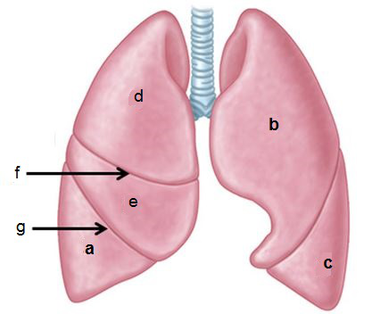
Bron: Moore et al. Essential Clinical Anatomy, Wolters Kluwer 2015. Met welke letters worden de structuren aangeduid?
Sleep een optie naar de bijbehorende rij, of tik eerst op een kaart en dan op een rij.
lobus medius pulmo dexter
Sleep hier naartoe
lobus superior pulmo sinister
Sleep hier naartoe
lobus inferior pulmo dexter
Sleep hier naartoe
fissura horizontalis
Sleep hier naartoe
Vraag 4
In welk deel van het mediastinum zijn de volgende structuren hoofdzakelijk gelegen?
Arcus aortae
Trachea
Vena azygos
Vraag 5
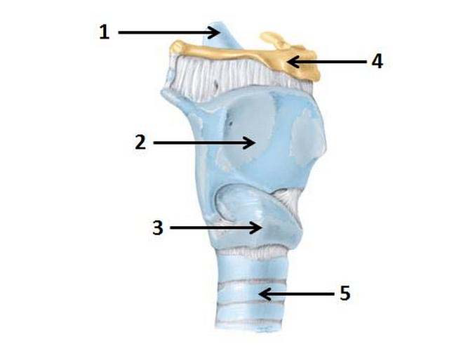
Bekijk de afbeelding. Met welk nummer zijn de volgende structuren aangeduid?
Sleep een optie naar de bijbehorende rij, of tik eerst op een kaart en dan op een rij.
Cartilago cricoideum
Sleep hier naartoe
Cartilago thyroideum
Sleep hier naartoe
Os hyoideum
Sleep hier naartoe
Vraag 6
Hoe zijn de organen ten opzichte van het peritoneum hoofdzakelijk gelegen?
Colon descendens
Milt
Pancreas
Vraag 7
Bekijk de afbeelding. U ziet hier een histologisch preparaat van een onderdeel van de long. Welke structuur wordt aangegeven met de pijl?
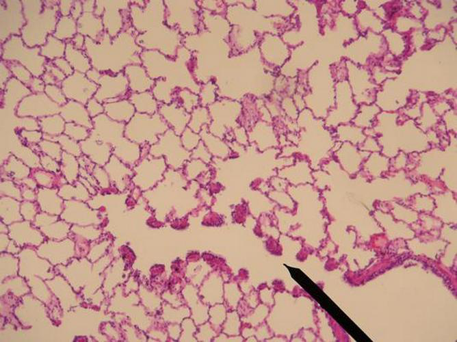
Vraag 8
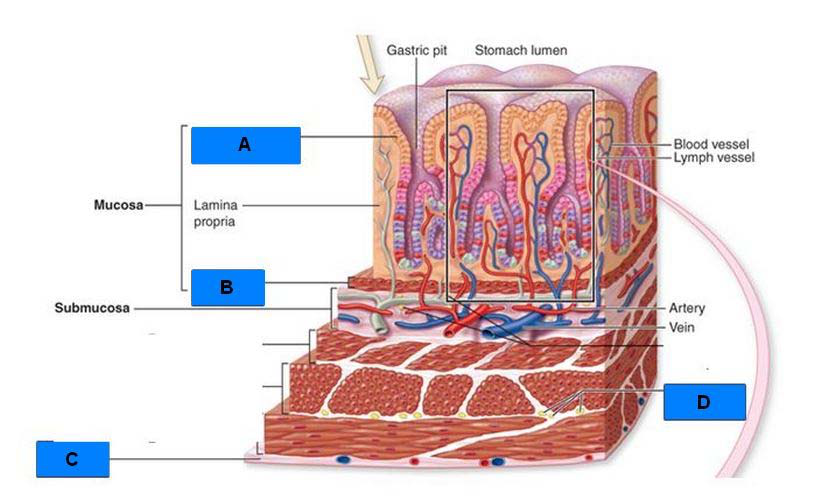
Bekijk de afbeelding. U ziet hier een schematische weergave van een onderdeel van de maag. Plaats de volgende onderdelen (A t/m D) in het juiste kader.
Sleep een optie naar de bijbehorende rij, of tik eerst op een kaart en dan op een rij.
A
Sleep hier naartoe
B
Sleep hier naartoe
C
Sleep hier naartoe
D
Sleep hier naartoe
Vraag 9
Hoesten is een van de meest voorkomende klachten in de bevolking. Zet de volgende leeftijdscategorieën in de volgorde met bovenaan de hoogste incidentie van de klacht hoesten en onderaan de laagste incidentie.
Sleep een optie naar de bijbehorende rij, of tik eerst op een kaart en dan op een rij.
1 (hoogste incidentie)
Sleep hier naartoe
2
Sleep hier naartoe
3 (laagste incidentie)
Sleep hier naartoe
Vraag 10
Kies de juiste alternatieven.
Welke structuur bevindt zich in de volgende onderdelen van het mediastinum? Er is steeds één antwoord het meest juist. Mediastinum anterius: · Mediastinum medium: · Mediastinum superius:
Vraag 11
Zie de afbeelding. Welke spier wordt met de pijl aangeduid?
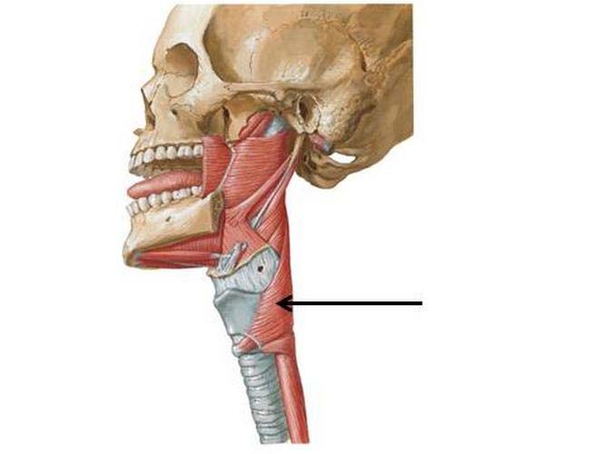
Vraag 12
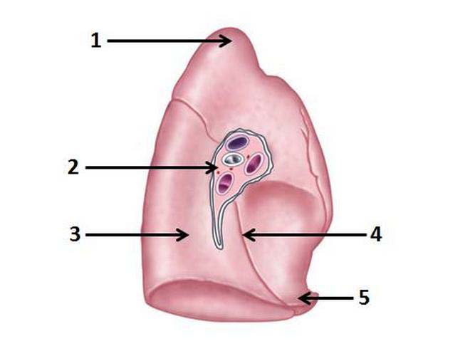
Zie de afbeelding. Met welk nummer zijn de structuren aangeduid?
Sleep een optie naar de bijbehorende rij, of tik eerst op een kaart en dan op een rij.
Fissura obliqua
Sleep hier naartoe
Lingula
Sleep hier naartoe
Lobus inferior
Sleep hier naartoe
Vraag 13
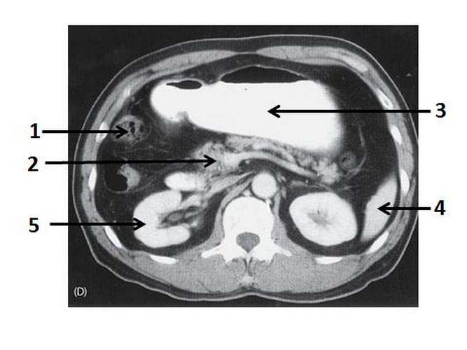
Zie de afbeelding. Met welk nummer worden de volgende structuren aangeduid?
Sleep een optie naar de bijbehorende rij, of tik eerst op een kaart en dan op een rij.
Caput pancreatis
Sleep hier naartoe
Colon
Sleep hier naartoe
Maag
Sleep hier naartoe
Vraag 14
Kies de juiste alternatieven.
CASUS — U loopt uw tweedejaars stage bij de huisarts en observeert het volgende gespreksfragment. Patiënt: “Ik ben al een tijdje niet in orde. Het begon gewoon met een verkoudheid.” Arts: “Heeft u ook spierpijn?” Beantwoord de vragen met alleen de informatie uit dit gespreksfragment. Vraag 1: De vraag die de arts stelt is een voorbeeld van een vraag. Vraag 2: De vraag die de arts stelt ligt het referentiekader van de patiënt.
Vraag 15
Door welk type epitheel wordt de oesophagus bekleed?
Vraag 16
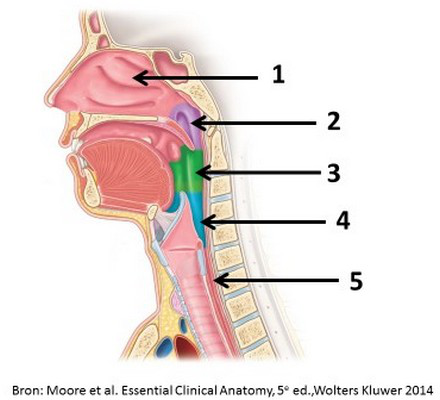
Bekijk de afbeelding. Met welke nummers worden de onderdelen van de pharynx aangeduid?
Sleep een optie naar de bijbehorende rij, of tik eerst op een kaart en dan op een rij.
laryngopharynx
Sleep hier naartoe
oropharynx
Sleep hier naartoe
Vraag 17
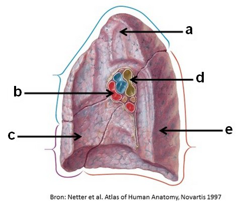
Bekijk de afbeelding. Met welke letter zijn de structuren aangeduid?
Sleep een optie naar de bijbehorende rij, of tik eerst op een kaart en dan op een rij.
bronchus
Sleep hier naartoe
lobus inferior
Sleep hier naartoe
v. pulmonalis
Sleep hier naartoe
Vraag 18
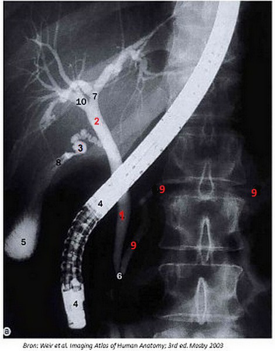
Bekijk de afbeelding. Benoem de volgende genummerde structuren.
Sleep een optie naar de bijbehorende rij, of tik eerst op een kaart en dan op een rij.
Structuur 1
Sleep hier naartoe
Structuur 2
Sleep hier naartoe
Structuur 3
Sleep hier naartoe
Vraag 19
Bekijk de afbeelding. Van welk onderdeel van het maagdarmkanaal ziet u hier een histologisch preparaat?
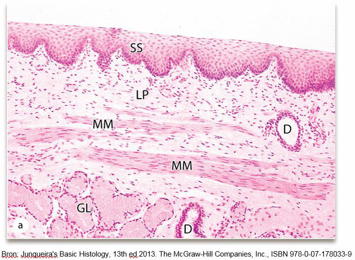
Vraag 20
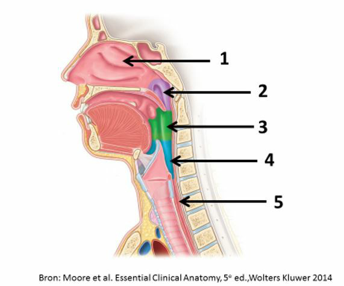
Kies de juiste alternatieven.
Bekijk de afbeelding. Nasopharynx wordt aangeduid met nummer . Oesophagus wordt aangeduid met nummer .
Vraag 21
Hoe zijn de organen ten opzichte van het peritoneum hoofdzakelijk gelegen? (NB: dit kan bij verschillende organen hetzelfde zijn.)
maag
jejunum
colon descendens
Vraag 22
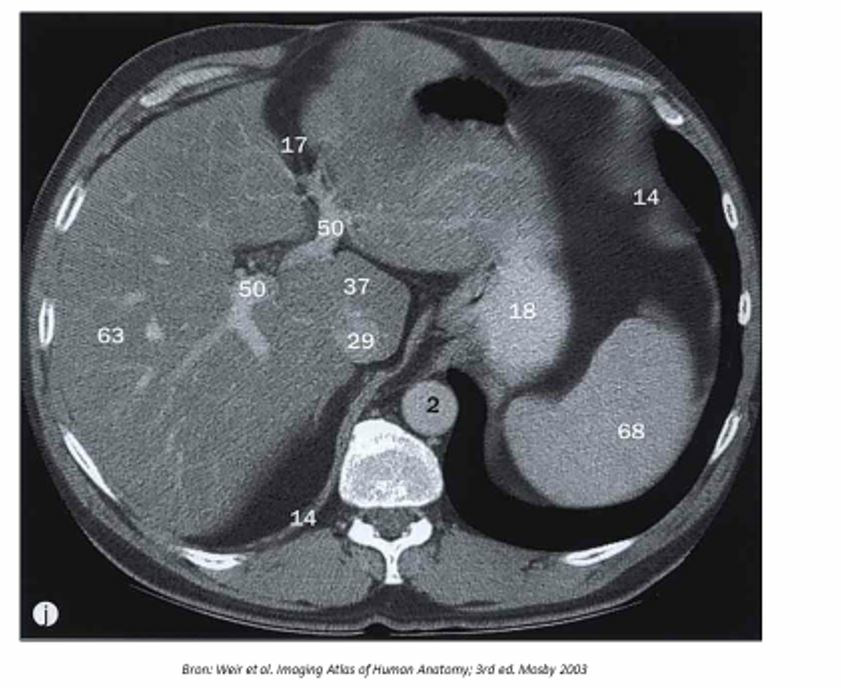
Bekijk de afbeelding (CT-scan). Sleep de 3 nummers naar de juiste structuur. Kies bij elke structuur het bijbehorende nummer, of ‘geen nummer’ als de structuur niet met een nummer is aangeduid.
lever
maag
aorta
vena cava inferior
diafragma
pleuraholte
Vraag 23
Op welk deel van het mediastinum hebben we op onderstaande afbeelding het meest directe zicht?
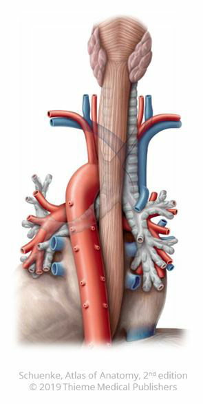
Vraag 24
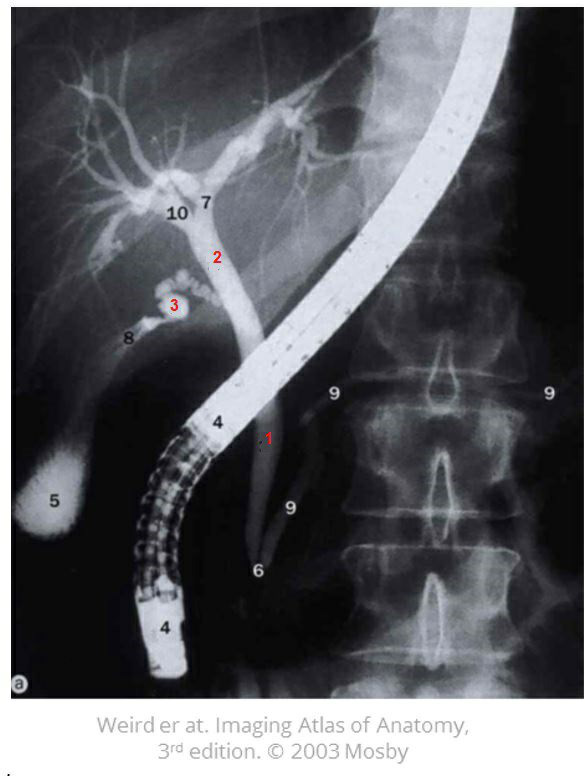
Bekijk onderstaande afbeelding. Sleep de cijfers 1 t/m 3 van rechts naar de corresponderende structuur in de linkerkolom.
Sleep een optie naar de bijbehorende rij, of tik eerst op een kaart en dan op een rij.
Nummer 1
Sleep hier naartoe
Nummer 2
Sleep hier naartoe
Nummer 3
Sleep hier naartoe
Vraag 25
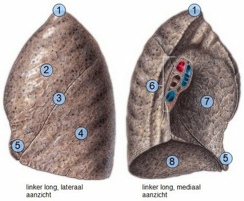
Anatomie linker long. Sleep de structuur naar het juiste nummer (conform de afbeelding).
Sleep een optie naar de bijbehorende rij, of tik eerst op een kaart en dan op een rij.
Nummer 1
Sleep hier naartoe
Nummer 2
Sleep hier naartoe
Nummer 3
Sleep hier naartoe
Nummer 4
Sleep hier naartoe
Nummer 5
Sleep hier naartoe
Nummer 6
Sleep hier naartoe
Nummer 7
Sleep hier naartoe
Nummer 8
Sleep hier naartoe
Vraag 26
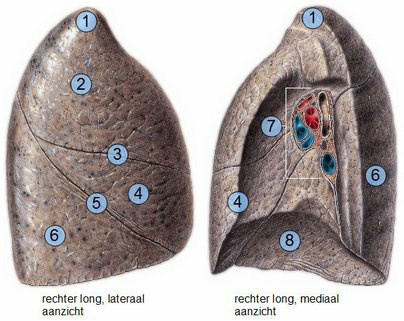
Anatomie rechter long (Afbeelding: Sobotta - Atlas van de menselijke anatomie, aangepast). Geef achter iedere structuur aan met welk nummer deze wordt aangeduid in de afbeelding.
Sleep een optie naar de bijbehorende rij, of tik eerst op een kaart en dan op een rij.
fissura horizontalis
Sleep hier naartoe
fissura obliqua
Sleep hier naartoe
lobus inferior
Sleep hier naartoe
lobus medius
Sleep hier naartoe
lobus superior
Sleep hier naartoe
longbasis
Sleep hier naartoe
longhilus
Sleep hier naartoe
longtop (apex)
Sleep hier naartoe
Vraag 27
Op welke lijn (hoogte) ligt de onderverdeling tussen het mediastinum superius en inferius?
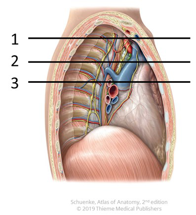
Vraag 28
Welke van de volgende uitspraken over ketonlichamen is waar?
Vraag 29
Door welke structuur worden galcapillairen bekleed?
Vraag 30
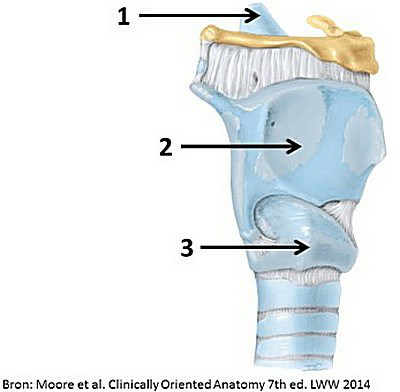
Sleep de nummers naar de juiste structuren. Met welk nummer (op de afbeelding) is elke structuur aangeduid? (Twee structuren horen bij geen nummer.)
Epiglottis
Cartilago thyroidea
Cartilago cricoidea
Os hyoideum
Cartilago arytenoidea
Vraag 31
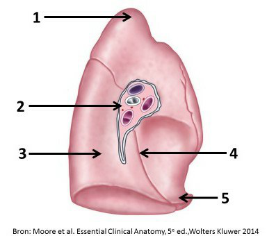
Sleep de structuren naar het juiste nummer. Bij welk nummer op de afbeelding hoort elke structuur?
Sleep een optie naar de bijbehorende rij, of tik eerst op een kaart en dan op een rij.
Apex pulmonis
Sleep hier naartoe
Fissura obliqua
Sleep hier naartoe
Lingula
Sleep hier naartoe
Vraag 32
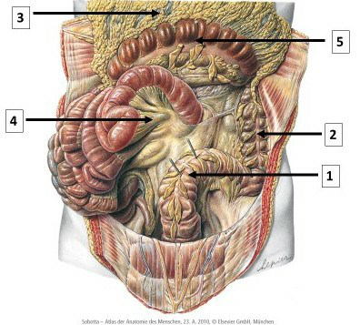
Sleep de structuren naar het juiste nummer. Bij welk nummer op de afbeelding hoort elke structuur?
Sleep een optie naar de bijbehorende rij, of tik eerst op een kaart en dan op een rij.
Colon sigmoideum
Sleep hier naartoe
Het mesenterium
Sleep hier naartoe
Colon transversum
Sleep hier naartoe
Vraag 33
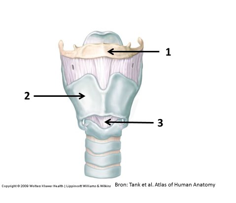
Bekijk de afbeelding. Sleep het juiste nummer naar elke structuur (niet elke structuur heeft een nummer).
os hyoideum
cartilago thyroidea
ligamentum cricothyroideum
membrana thyrohyoidea
cartilago cricoidea
Vraag 34
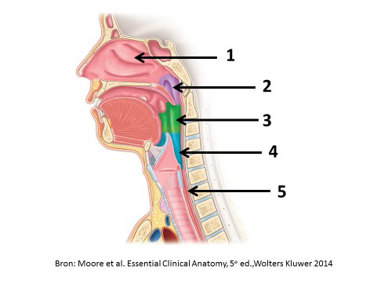
Bekijk de afbeelding. Sleep het juiste nummer naar elke structuur.
Sleep een optie naar de bijbehorende rij, of tik eerst op een kaart en dan op een rij.
oropharynx
Sleep hier naartoe
laryngopharynx
Sleep hier naartoe
Vraag 35
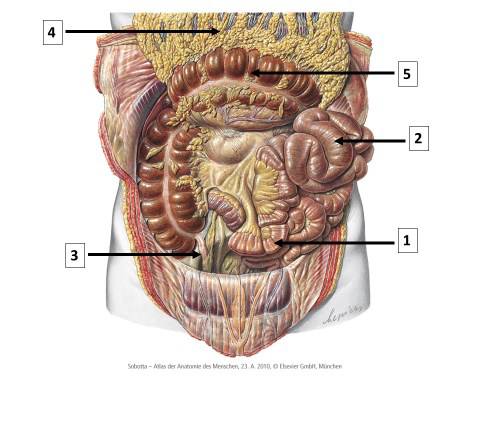
Bekijk de afbeelding. Sleep elke structuur naar het juiste nummer.
Sleep een optie naar de bijbehorende rij, of tik eerst op een kaart en dan op een rij.
ileum
Sleep hier naartoe
omentum majus
Sleep hier naartoe
colon transversum
Sleep hier naartoe
Vraag 36
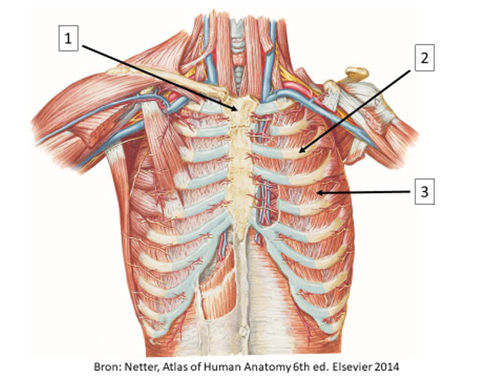
Bekijk de afbeelding. Sleep de nummers naar de bijbehorende structuur.
Sleep een optie naar de bijbehorende rij, of tik eerst op een kaart en dan op een rij.
Nummer 1
Sleep hier naartoe
Nummer 2
Sleep hier naartoe
Nummer 3
Sleep hier naartoe
Vraag 37
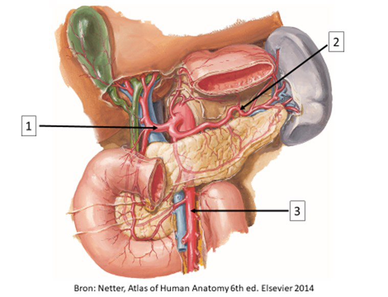
Zie onderstaande afbeelding. Sleep de nummers naar de juiste structuur.
Sleep een optie naar de bijbehorende rij, of tik eerst op een kaart en dan op een rij.
Nummer 1
Sleep hier naartoe
Nummer 2
Sleep hier naartoe
Nummer 3
Sleep hier naartoe
Vraag 38
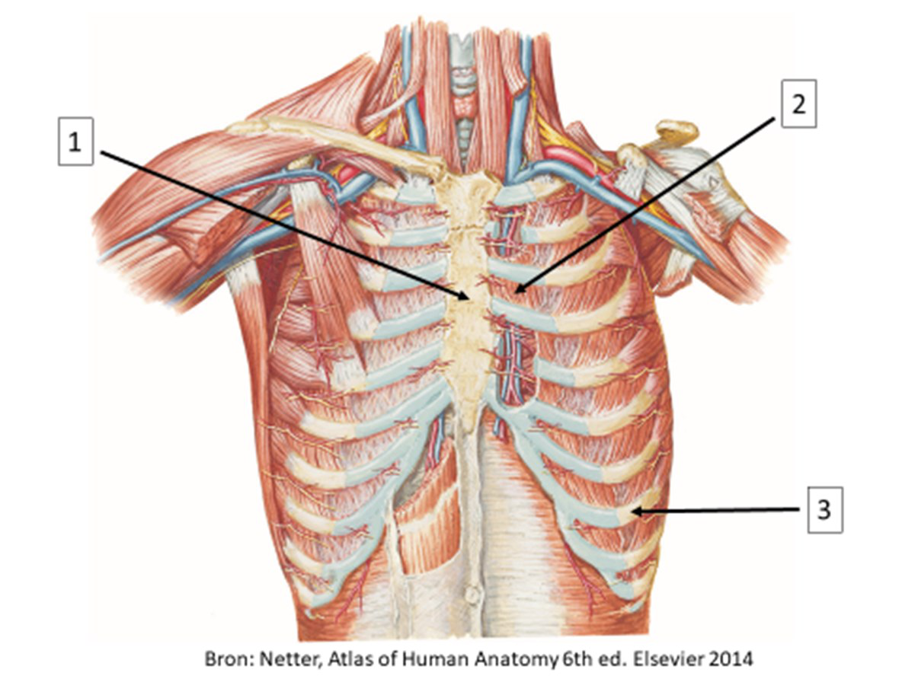
Bekijk de afbeelding. Sleep de nummers naar de juiste structuur.
Sleep een optie naar de bijbehorende rij, of tik eerst op een kaart en dan op een rij.
Corpus sterni
Sleep hier naartoe
m. intercostalis internus
Sleep hier naartoe
Costa spuria
Sleep hier naartoe
Vraag 39
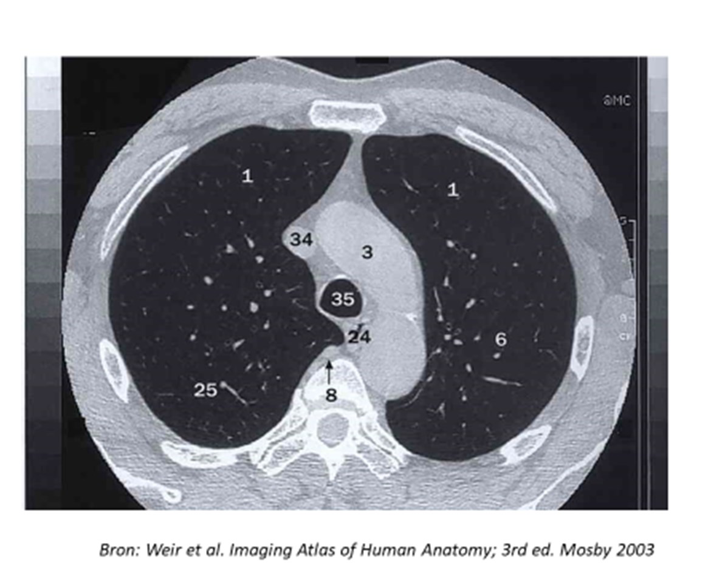
Kies de juiste alternatieven.
Bekijk de afbeelding. Welke structuren worden met de nummers aangeduid? — 3: . 24: .
Vraag 40
Bekijk de afbeelding. Benoem voor de organen aangeduid met de nummers wat hun peritoneale ligging is.
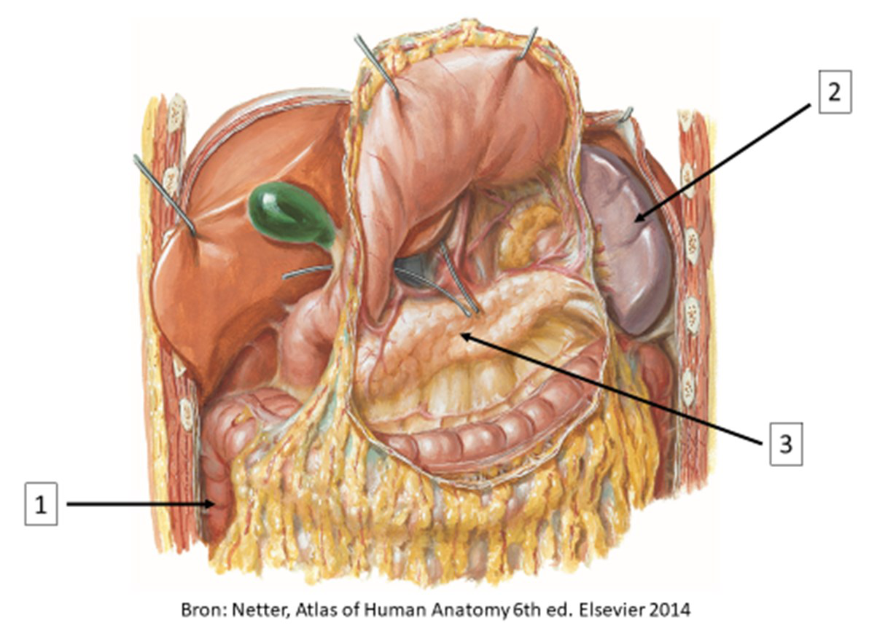
Kies de juiste alternatieven.
Bekijk de afbeelding. Benoem voor de organen aangeduid met de nummers wat hun peritoneale ligging is. — 1: . 2: . 3: .